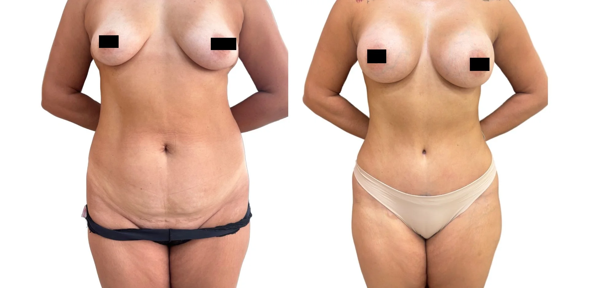
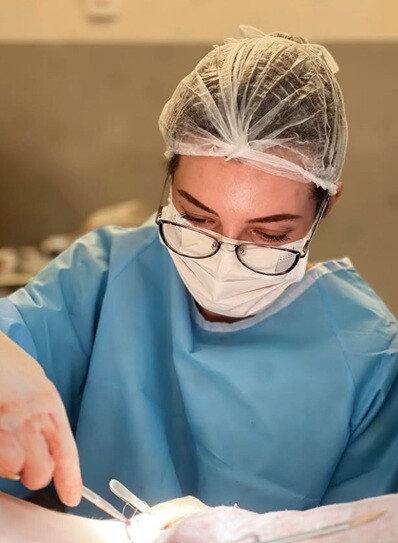
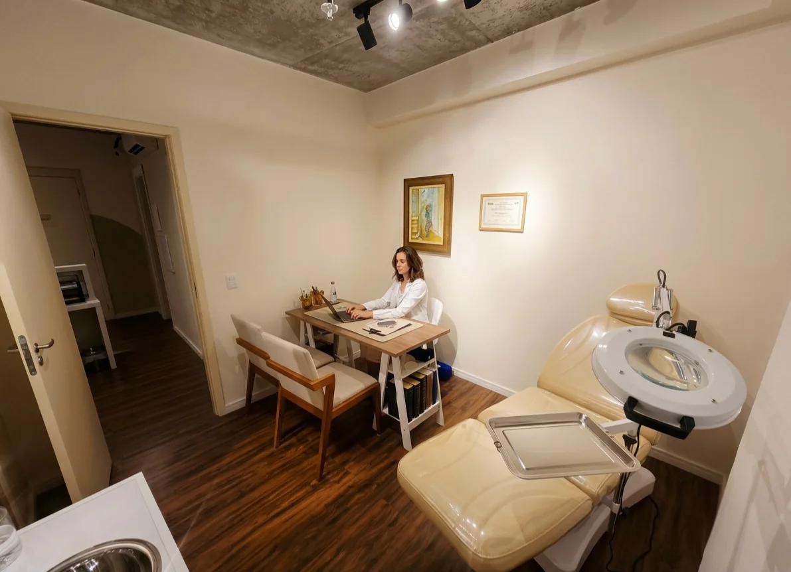
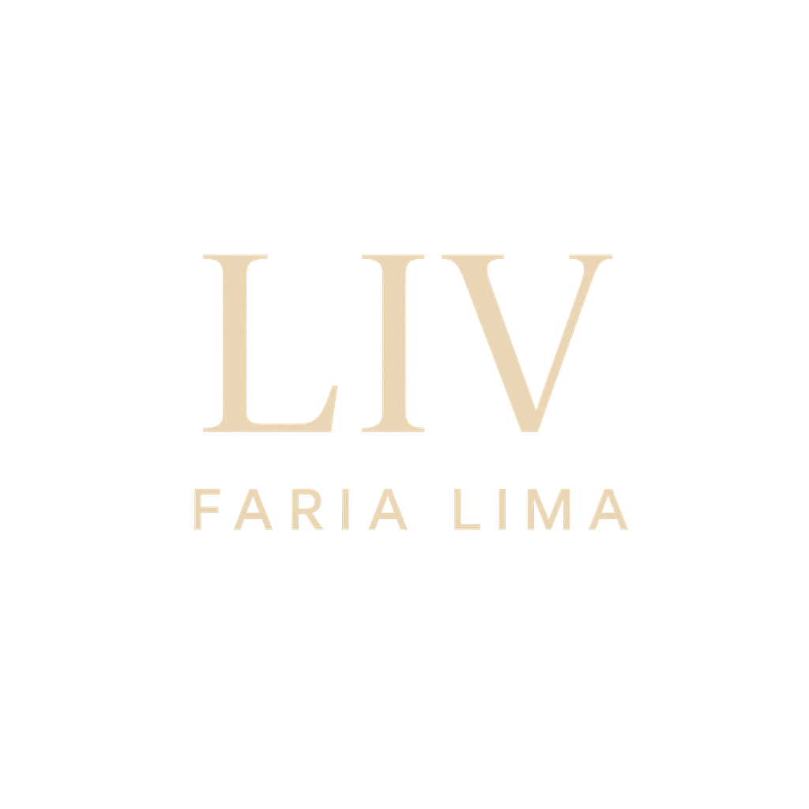

Lifting facial e cervical
Para alterações de sustentação, contorno do rosto e pescoço que exigem uma abordagem estrutural.
Precisão para indicar o que faz sentido. Sensibilidade para preservar o que torna você única.
Consulta médica particular em Pinheiros · Clínica LIV Faria Lima.

O planejamento considera sustentação, pele, volumes, expressão e contorno cervical. A indicação pode envolver cirurgia, tratamentos não cirúrgicos ou nenhuma intervenção naquele momento.
Para alterações de sustentação, contorno do rosto e pescoço que exigem uma abordagem estrutural.
Para excesso de pele, bolsas e mudanças no olhar, considerando também sobrancelhas e proporções da face.
Conhecer blefaroplastiaPara avaliar se a alteração envolve gordura, pele, músculo ou uma combinação dessas estruturas.
Para avaliar projeção, formato, assimetrias e proporção das orelhas em relação à face.
Conhecer otoplastiaTratamentos selecionados conforme movimento, volume, proporções, textura e qualidade da pele.
Conhecer os tratamentosPara quem percebe uma mudança, mas ainda não sabe se o melhor caminho é cirurgia, tratamento não cirúrgico ou acompanhamento.
Entender a avaliação facialCada indicação considera anatomia, cicatrizes, recuperação e limites de segurança.
Mastopexia, prótese e redução são avaliadas conforme pele, volume, proporções e cicatrizes.
Lipoaspiração, abdominoplastia e retirada de pele são planejadas conforme gordura, flacidez, cicatrizes e segurança.
A avaliação considera desconforto, função, anatomia e expectativas, com acolhimento e privacidade.
As imagens ajudam a compreender possibilidades, cicatrizes e limites. Cada resultado depende da anatomia, da indicação, da técnica e da recuperação de cada paciente.

Contorno facial e cervical avaliados em conjunto, com respeito às características individuais.

Resultado individual apresentado para contextualizar indicação, expressão e cicatrização.

Procedimentos combinados somente quando anatomia, recuperação e limites clínicos permitem.

Resultado individual de correção da projeção das orelhas, apresentado com contexto.
Imagens autorizadas, com finalidade educativa. Resultados variam conforme anatomia, indicação, técnica, cicatrização e cuidados pós-operatórios. Resultados insatisfatórios, intercorrências e complicações são possíveis; riscos específicos e eventual necessidade de revisão são discutidos na avaliação médica.
Graduada em Medicina e formada em Cirurgia Plástica pela UNICAMP, com pós-graduação pelo Einstein, a Dra. Amanda avalia anatomia, expressão, rotina e expectativas antes de indicar qualquer procedimento.
A recomendação pode ser uma cirurgia, uma abordagem não cirúrgica ou não intervir naquele momento.

Algumas pacientes se sentem mais à vontade para conversar sobre envelhecimento, corpo, maternidade, sexualidade, cicatrizes e inseguranças com outra mulher.
Essa identificação não substitui formação, técnica ou segurança. Ela pode tornar a conversa mais franca e ajudar a esclarecer o que a paciente deseja tratar e o que prefere preservar.
A indicação considera anatomia, expressão, rotina, expectativas, riscos e limites de segurança. Operar, combinar tratamentos ou não intervir podem ser decisões igualmente corretas.
Traços, expressão e proporções orientam o planejamento.
A técnica é discutida somente depois de compreender as estruturas envolvidas e o objetivo de cada paciente.
Evitar excessos também faz parte de uma prática médica responsável.
O objetivo não é reproduzir um modelo, mas buscar um resultado coerente com as proporções e características de cada pessoa.

A segurança começa antes da cirurgia e depende da avaliação individual, do procedimento, da estrutura escolhida e de um acompanhamento bem organizado.
História médica, exame e análise dos fatores de risco.
Solicitações e orientações definidas conforme o procedimento e as condições de cada paciente.
Planejamento conjunto com profissionais habilitados e estrutura adequada ao porte da cirurgia.
Escolha da estrutura e análise criteriosa de possíveis associações de procedimentos.
Orientações, acompanhamento da evolução, cicatrizes, atividades e dúvidas pós-operatórias.
As avaliações mencionam especialmente a escuta, a indicação criteriosa, a clareza, o profissionalismo e o acompanhamento próximo.
Ver avaliações no GoogleA Amanda foi extremamente profissional e delicada. Fui com a intenção de realizar um procedimento específico, mas ela me orientou para uma opção mais adequada, respeitando minhas características e particularidades.Ana Elisa D’Annibale
Sempre foi muito cuidadosa e detalhista nos procedimentos que realizei. Esclareceu todas as minhas dúvidas desde a primeira consulta até o pós-operatório, sempre muito profissional e humana.Nicoli Cadioli
Ótima formação profissional, coerência, acolhimento e me passa segurança.Raphaela Garofo
Recomendo muitíssimo. Desde minha primeira consulta com a Dra. Amanda, já levei minha mãe e meu pai.Thaïs Chauvel
A estrutura reúne consulta, planejamento e organização pré-operatória, facilitando exames, orientações e próximos passos antes da cirurgia.
Consulta em ambiente discreto, com tempo para discutir dúvidas, expectativas e próximos passos.
Avaliação cardiológica integrada quando indicada, com Dr. Daniel Added, cardiologista formado pela USP e médico do InCor.
Menos deslocamentos, mais clareza sobre exames, preparo, cirurgia e acompanhamento.




R. Pais Leme, 215 - Pinheiros, São Paulo - SP, 05424-150 Equipe de atendimento disponível todos os dias, das 7h às 23h. Próxima à Estação Pinheiros (Metrô) · estacionamento pago no local Ver localização no GoogleA consulta é particular e acontece na Clínica LIV Faria Lima, em Pinheiros. Nela, a Dra. Amanda avalia sua queixa, examina as estruturas envolvidas e discute possibilidades, limites, cicatrizes, recuperação e próximos passos.
Horários e orientações são informados pela equipe pelo WhatsApp.
Emitida para reembolso pelo convênio ou declaração no Imposto de Renda.
Consulta presencial. Teleconsulta inicial em casos selecionados.
Clínica LIV Faria Lima · Pinheiros, São Paulo.
Não. A consulta começa pela sua queixa e pelo exame da anatomia. A Dra. Amanda explica quais possibilidades fazem sentido, quais não são indicadas e se é melhor operar, tratar de outra forma ou apenas acompanhar.
Sim. A atuação inclui rejuvenescimento facial, blefaroplastia, cirurgias de mama, abdominoplastia, lipoaspiração, contorno corporal, pós-bariátrica e outros procedimentos selecionados após avaliação.
A consulta organiza as queixas, examina as estruturas envolvidas, registra fotografias quando necessário e discute possibilidades, limites, cicatrizes, recuperação e próximos passos.
Conforme o porte do procedimento, as necessidades clínicas e o planejamento de cada paciente, a cirurgia pode ser programada no Hospital Sírio-Libanês, Hospital Nove de Julho, Hospital Oswaldo Cruz ou em outra instituição criteriosamente selecionada.
Os retornos e os canais de contato são adaptados ao procedimento e à evolução de cada paciente, com acompanhamento próximo para orientar edema, cicatrizes, atividades e dúvidas durante a recuperação.
Em alguns casos, sim. A associação depende do tempo cirúrgico, das condições clínicas, da recuperação esperada e de uma análise individual de segurança.
A avaliação presencial é ideal para exame físico e planejamento. Também realizamos teleconsultas em casos selecionados, especialmente para orientação inicial ou pacientes de fora de São Paulo.
A segurança começa antes da cirurgia, com avaliação clínica, exames pré-operatórios, escolha de uma estrutura hospitalar adequada e análise individual dos fatores de risco. O preparo e as orientações são definidos conforme o procedimento e as condições de cada paciente.
Sim. A equipe orienta os próximos passos pelo WhatsApp e emite nota fiscal para reembolso pelo convênio e declaração no Imposto de Renda.
Receba informações sobre a consulta, horários disponíveis, localização e próximos passos.